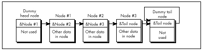
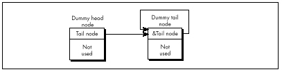

| Previous | Table of Contents | Next |
LISTING 15.1 L15-1.C
/* Deletes the node in a linked list that follows the indicated node.
Assumes list is headed by a dummy node, so no special testing for
the head-of-list pointer is required. Returns the same pointer
that was passed in. */
#include “llist.h”
struct LinkNode *DeleteNodeAfter(struct LinkNode *NodeToDeleteAfter)
{
NodeToDeleteAfter->NextNode =
NodeToDeleteAfter->NextNode->NextNode;
return(NodeToDeleteAfter);
}
LISTING 15.2 LLIST.H
/* Linked list header file. */
#define MAX_TEXT_LENGTH 100 /* longest allowed Text field */
#define SENTINEL 32767 /* largest possible Value field */
struct LinkNode {
struct LinkNode *NextNode;
int Value;
char Text[MAX_TEXT_LENGTH+1];
/* Any number of additional data fields may by present */
};
struct LinkNode *DeleteNodeAfter(struct LinkNode *);
struct LinkNode *FindNodeBeforeValue(struct LinkNode *, int);
struct LinkNode *InitLinkedList(void);
struct LinkNode *InsertNodeSorted(struct LinkNode *,
struct LinkNode *);
LISTING 15.3 L15-3.C
/* Deletes the node in the specified linked list that follows the
indicated node. List is headed by a head-of-list pointer; if the
pointer to the node to delete after points to the head-of-list
pointer, special handling is performed. */
#include “llist.h”
struct LinkNode *DeleteNodeAfter(struct LinkNode **HeadOfListPtr,
struct LinkNode *NodeToDeleteAfter)
{
/* Handle specially if the node to delete after is actually the
head of the list (delete the first element in the list) */
if (NodeToDeleteAfter == (struct LinkNode *)HeadOfListPtr) {
*HeadOfListPtr = (*HeadOfListPtr)->NextNode;
} else {
NodeToDeleteAfter->NextNode =
NodeToDeleteAfter->NextNode->NextNode;
}
return(NodeToDeleteAfter);
}
However, it is true that if you’re going to store a variety of types of structures in your linked lists, you should start each node with the LinkNode field. That way, the link pointer is in the same place in every structure, and the same linked list code can handle all of the structure types by casting them to the base link-node structure type. This is a less than elegant approach, but it works. C++ can handle data mixing more cleanly than C, via derivation from a base link-node class.
Note that Listings 15.1 and 15.3 have to specify the linked-list delete operation as “delete the next node,” rather than “delete this node,” because in order to relink it’s necessary to access the NextNode field of the node preceding the node to be deleted, and it’s impossible to backtrack in a singly linked list. For this reason, singly-linked list operations tend to work with the structure preceding the one of interest—and that makes the problem of having to special-case the head pointer all the more acute.
Similar problems with the head pointer crop up when you’re inserting nodes, and in fact in all link manipulation code. It’s easy to end up working with either pointers to pointers or lots of special-case code, and while those approaches work, they’re inelegant and inefficient.
A far better approach is to use a dummy node for the head of the list, as shown in Figure 15.2. I invented this one for myself the next time I encountered linked lists, while designing a seed fill function for MetaWindows, back during my tenure at Metagraphics Corp. But I could have learned it by spending five minutes with Sedgewick’s book.

Figure 15.2 Using a dummy head and tail node with a linked list.
| The next-node pointer of the head node, which points to the first real node, is the only part of the head node that’s actually used. This way the same code works on the head node as on the rest of the list, so there are no special cases. |
Likewise, there should be a separate node for the tail of the list, so that every node that contains real data is guaranteed to have a node on either side of it. In this scheme, an empty list contains two nodes, as shown in Figure 15.3. Although it is not necessary, the tail node may point to itself as its own next node, rather than contain a NULL pointer. This way, a deletion operation on an empty list will have no effect—quite unlike the same operation performed on a list terminated with a NULL pointer. The tail node of a list terminated like this can be detected because it will be the only node for which the next-node pointer equals the current-node pointer.
Figure 15.3 is a giant step in the right direction, but we can still make a few refinements. The inner loop of any code that scans through such a list has to perform a special test on each node to determine whether the tail has been reached. So, for example, code to find the first node containing a value field greater than or equal to a certain value has to perform two tests in the inner loop, as shown in Listing 15.4.
LISTING 15.4 L15-4.C
/* Finds the first node in a linked list with a value field greater
than or equal to a key value, and returns a pointer to the node
preceding that node (to facilitate insertion and deletion), or a
NULL pointer if no such value was found. Assumes the list is
terminated with a tail node pointing to itself as the next node. */
#include <stdio.h>
#include “llist.h”
struct LinkNode *FindNodeBeforeValueNotLess(
struct LinkNode *HeadOfListNode, int SearchValue)
{
struct LinkNode *NodePtr = HeadOfListNode;
while ( (NodePtr->NextNode->NextNode != NodePtr->NextNode) &&
(NodePtr->NextNode->Value < SearchValue) )
NodePtr = NodePtr->NextNode;
if (NodePtr->NextNode->NextNode == NodePtr->NextNode)
return(NULL); /* we found the sentinel; failed search */
else
return(NodePtr); /* success; return pointer to node preceding
node that was >= */
}
Suppose, however, that we make the tail node a sentinel by giving it a value that is guaranteed to terminate the search, as shown in Figure 15.4. The list in Figure 15.4 has a sentinel with a value field of 32,767; since we’re working with integers, that’s the highest possible search value, and is guaranteed to satisfy any search that comes down the pike. The success or failure of the search can then be determined outside the loop, if necessary, by checking for the tail node’s special pointer—but the inside of the loop is streamlined to just one test, as shown in Listing 15.5. Not all linked lists lend themselves to sentinels, but the performance benefits are considerable for those lend themselves to sentinels, but the performance benefits are considerable for those that do.

Figure 15.3 Representing an empty list.
| Previous | Table of Contents | Next |